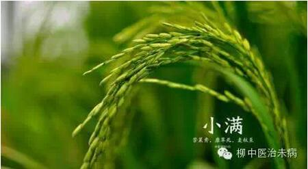
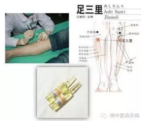
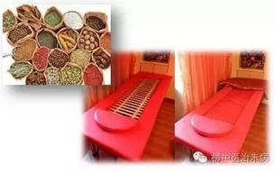

小满是夏季的第二个节气。"四月中，小满者，物致于此小得盈满。"这时全国北方地区麦类等夏熟作物籽粒已开始灌浆饱满，但还没有成熟，约相当乳熟后期，所以叫小满。每年5月20日到22日之间视太阳到达黄径60°时为小满。

小满时节，万物繁茂，生长最旺盛，人体的生理活动也处于最旺盛的时期，消耗的营养物质在四季二十四节气中最多，所以此时应及时适当补充营养，使身体五脏六腑不受损伤。对于小满养生，建议“未病先防”的原则。
小满养生要注意预防皮肤病
小满节气正值五月下旬，气温明显增高，如果贪凉卧睡很容易引发风湿症、湿性皮肤病等疾病。在小满节气的养生中，提倡“未病先防”就是在疾病发生之前，做好各种预防工作，以防止疾病的发生。专家称，在未病先防的养生中仍然强调，天人相应的整体观和正气内存、邪不可干的病理观。
这个时节是“风疹”的爆发期。据悉，“风疹”的病因主要有三点：
一、是湿郁肌肤，复感风热或风寒，与湿相博，郁于肌肤皮毛腠理之间而发病;
二、是由于肠胃积热，复感风邪，内不得疏泄，外不得透达，郁于皮毛腠理之间而来;
三、是与身体素质有关，吃鱼、虾、蟹等食物过敏导致脾胃不和，体湿生热，郁于肌肤发为本病。
从防治的原则上我们建议以下三种行至有效的中医外治干预措施，有效的增强机体的正气和防止风疹的发生。
黄芪穴位注射：
黄芪具有补中益气、利水消肿、托毒生肌的功效。

穴位注射可以增强体质,预防疾病,主要是因其针刺可以激发体内的防御机理有关。免疫是机体识别和清除外来抗原物质和自身变形物质,以维持机体外环境相对恒定所产生的一系列保护性反应。
中药熏蒸
传统中药，辩证施治，中药雾气中的表面活性剂促进被动扩散的吸收，增加表皮类脂膜对药物的透过率，可使全身细胞活跃，有效改善体质，增强免疫能力。并能有效排除体内的“风、寒、湿”邪。

自血疗法
自血疗法是抽取自身的静脉血注射到辨证穴位的皮下。是一种非特异性刺激疗法，可产生一种非特异性脱过敏作用，促进白细胞吞噬作用，从而增强机体免疫力。用于治疗慢性荨麻疹，全身皮肤瘙痒症，泛发性湿疹和皮炎，过敏性紫瘢，复发性疖肿和毛囊炎，青年痤疮等皮肤病。
养生膳食：多吃健脾化湿食物
小满节气气温明显增高、雨量增多，天气闷热潮湿，中医称之为“湿邪”。据专家介绍，人体的脾“喜燥恶湿”，受“湿邪”的影响最大，不少南方人一到雨季就会有食欲不振、腹胀、腹泻等消化功能减退的症状，还常伴有精神萎靡、嗜睡、身体乏力、不想喝水、舌苔白腻或黄腻等，中医叫做“湿邪中阻”。因此，小满养生注意健脾化湿为主。所以饮食调养宜以健脾化湿，益气和胃的食物为主。